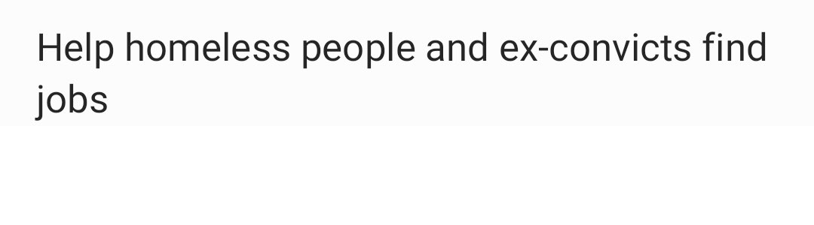
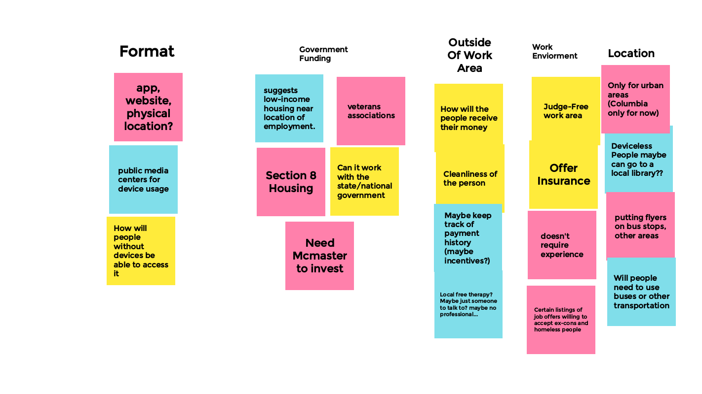
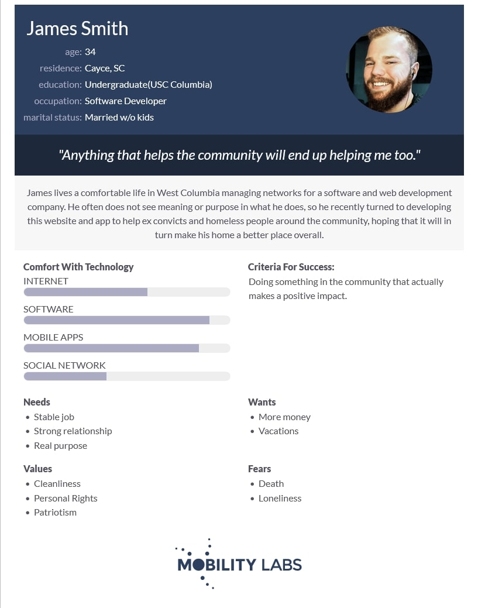
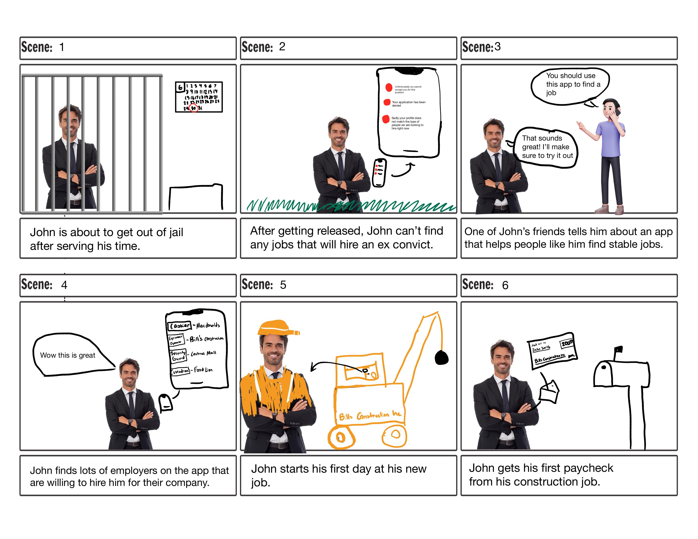
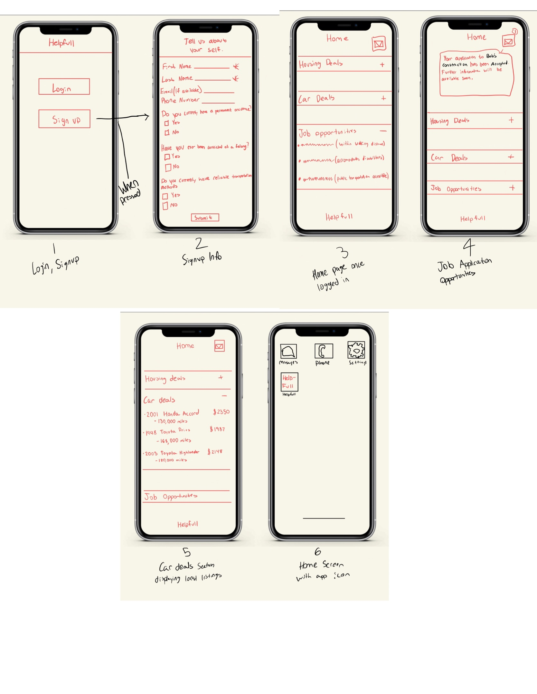
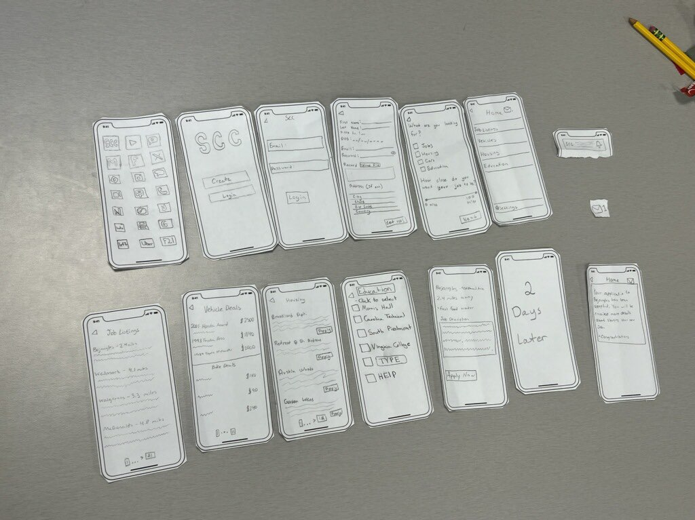
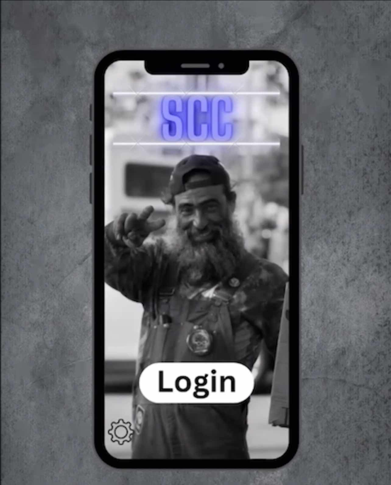

Helping homeless individuals and ex-convicts find employment is a challenge that requires lots of time and resources from employers and the government.

We sorted varyings questions and problems in an attempt to formulate quality solutions for the issue of homelessness in urban areas such as Columbia. These include the problems of location, government funding, transporation, application formats such as mobile apps and website, and other aspects such as the workplace enviornment or life outside of the workplace.

James Smith: "Anything that helps the community will end up helping me too"

John Smith, a man that has just got out of jail, is struggling to find a job that will hire an ex ex-convicts. One of his friends tells him about this new app that is made for people such as him find a job that is willing to hire someone such as him. This culminates in John finding a job through the app and making enough money to get back on track with his finances.

We created different ways our app will run and how users will be able to access and use it.

We showed off the functionalities and utilities of our app through using a interactive paper prototype.

More techonologically capable version of our paper prototype.